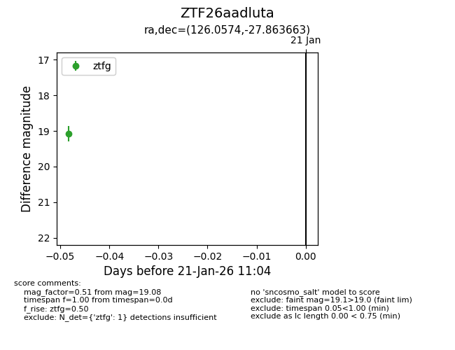
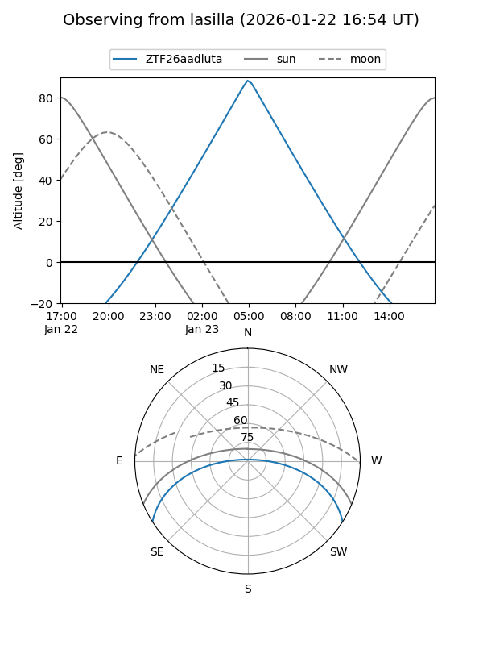
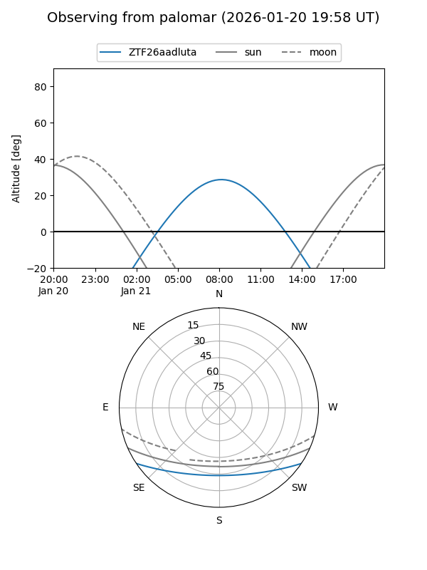

ZTF26aadluta
Target ZTF26aadluta at 2026-01-23 11:11
Aliases and brokers:
FINK: link
Lasair: link
ALeRCE: link
alt names
ZTF26aadluta (ztf,fink_ztf)
Coordinates:
equatorial (ra, dec) = 126.0574,-27.86366
equatorial (HMS+DMS) = 08:24:13.78,-27:51:49.19
galactic (l, b) = (248.2038,+5.55588)
Flags:
Photometry:
last ztfg=19.08, ztfr=18.93
1 ztfg, 1 ztfr detections
Lightcurve

Visibility


Additional plots